用MonkeyDev调试ipa
用Xcode+MonkeyDev去调试砸壳后的YouTube的ipa
概述
- （1）
Xcode新建MonkeyDev的MonkeyApp项目 - （2）设置基本参数
Product：youtubeOrganization Identifier：com.google.ios- 自动生成包名：
com.google.ios.youtube- 记得要和app真实包名是一致的
- （3）右键
TargetApp->Add Files to youtube->选择YouTube的ipa- 注意勾选：
Destination：Copy Items if needed- 表示将ipa拷贝过来，而不是只是建立引用（链接）
Added folders：Create groups
- 注意勾选：
- （4）确保已设置合适的目标部署iOS版本
- 尽量让
PROJECT和TARGETS中的iOS目标的版本一致PROJECT->ProjectName->Info->Deployment Target->iOS Deployment Target，比如设置为iOS 12.0TARGETS->ProjectName->General->Minimum Deployment，比如设置为iOS 12.0
- 尽量让
- （5）确保
Targets是youtube（而不是youtubeDylib），点击▶️按钮去启动调试，即可正常调试 - 如果遇到各种问题
- Unable to install
- Could not inspect the application package
- There was an internal API error
- 可以：
- 多试试几次
- 或
Xcode->Clean Build Folder，一般均可解决问题
- Unable to install
- （1）
详解：
新建MonkeyDev项目
- Xcode中新建项目，选
MonkeyDev->MonkeyApp- 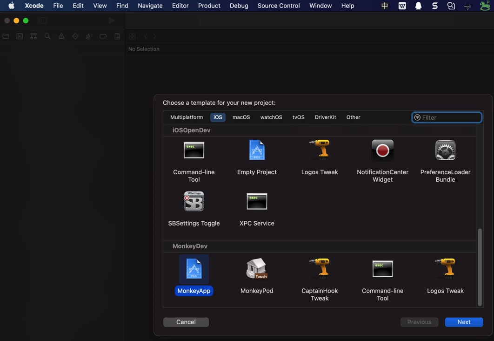
- 填写项目信息
- 效果
- 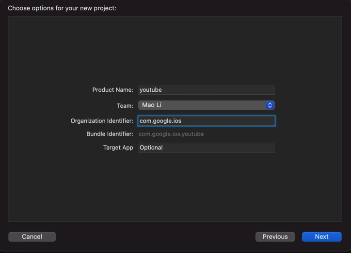
- 包名：
com.google.ios.youtubeProduct Name：youtubeOrganization Identifier：com.google.ios- 自动生成包名：
com.google.ios.youtube
- 自动生成包名：
Target App:Optional
- 效果
- 选择项目保存路径
- 此处：
/Users/crifan/dev/DevRoot/YoutubeAdsFilter/Xcode/YouTube_1708
- 此处：
- 新建好了
Xcode+MonkeyDev的项目- 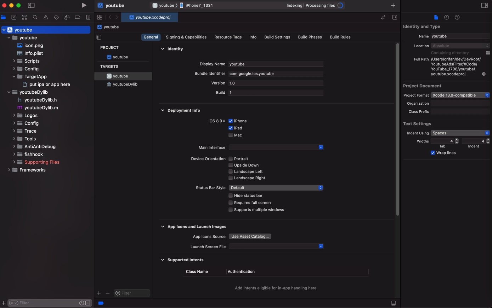
确保已设置合适的目标部署iOS版本
- 尽量让
PROJECT和TARGETS中的iOS目标的版本一致PROJECT->ProjectName->Info->Deployment Target->iOS Deployment Target，比如设置为iOS 12.0- 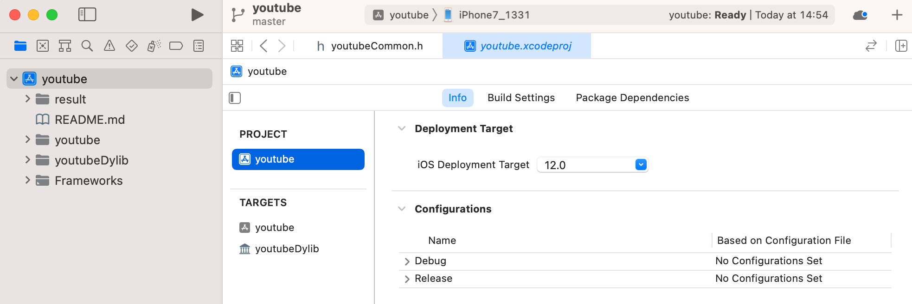
TARGETS->ProjectName->General->Minimum Deployment，比如设置为iOS 12.0- 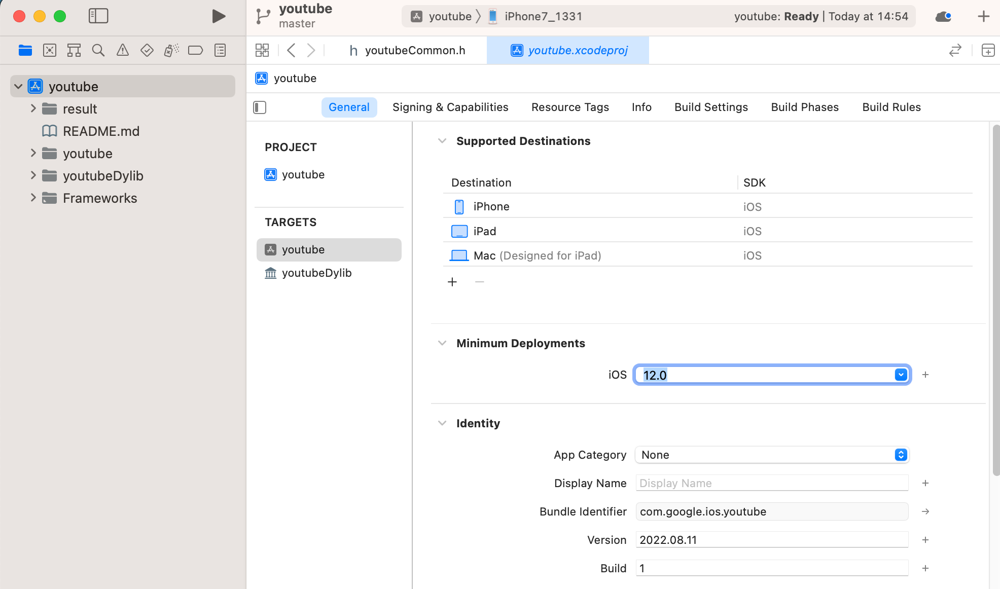
导入ipa
- 添加导入（砸壳后的）ipa
TargetApp->右键->Add Files to- 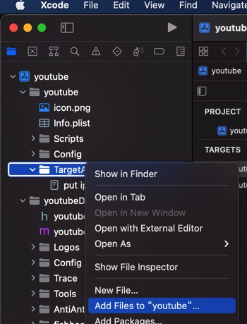
- 选择ipa文件
- 图
- 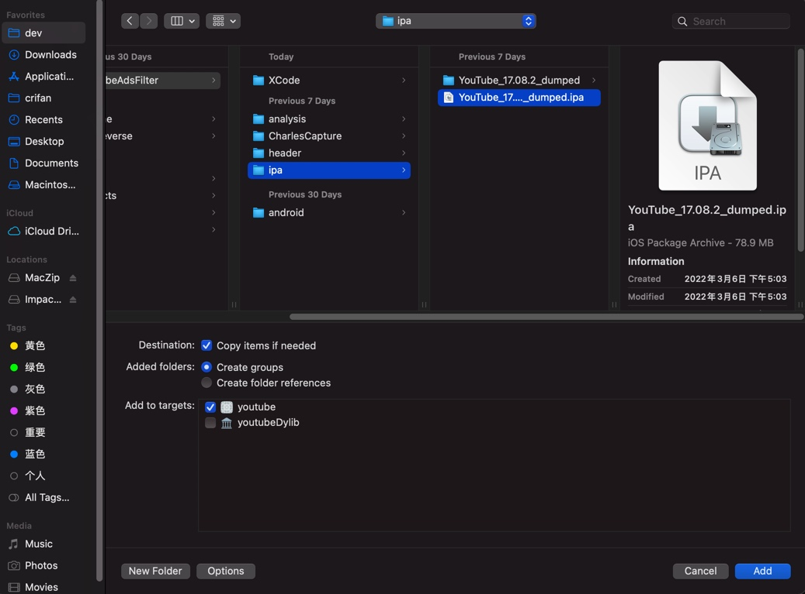
- 参数
Destination：Copy Items if neededAdded folders：Create groups
- 图
- 添加好了的ipa
- 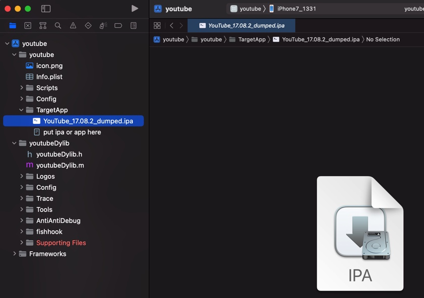
确认（调整）MonkeyDev配置参数
注意：默认的TARGETS是youtubeDylib，要先去切换过去TARGETS->youtube，才能看到配置。
去TARGETS->youtube 中确认此处MonkeyDev的配置参数（是你所希望的）：
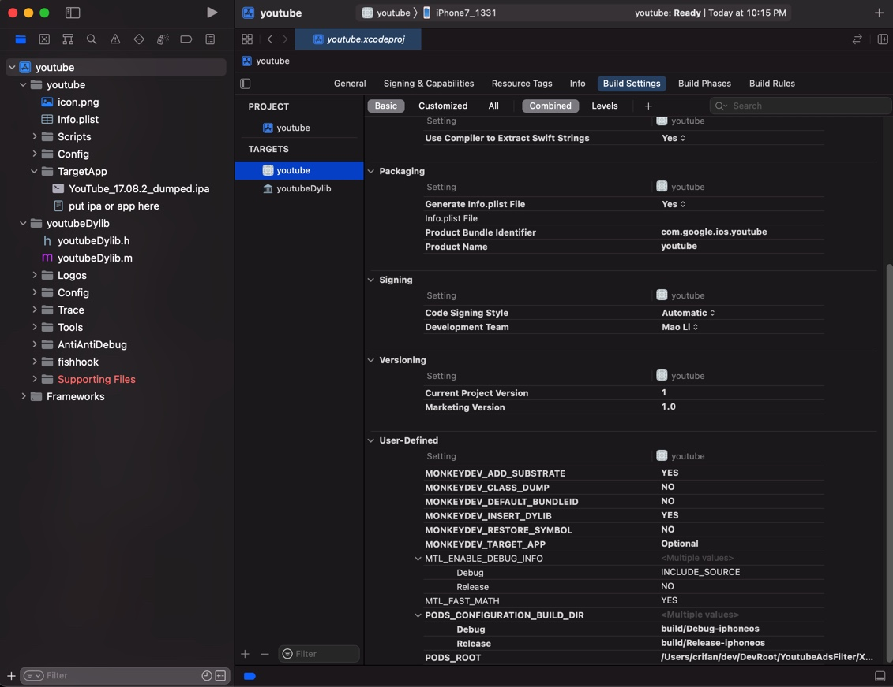
此处参数配置值（多数是默认值）是：
MONKEYDEV_ADD_SUBSTRATE=YESMONKEYDEV_CLASS_DUMP=NOMONKEYDEV_DEFAULT_BUNDLEID=NOMONKEYDEV_INSERT_DYLIB=YESMONKEYDEV_RESTORE_SYMBOL=NOMONKEYDEV_TARGET_APP=Optional
开始调试ipa
注意：默认的TARGETS是youtubeDylib，要先去切换过去TARGETS->youtube，才能正常运行，安装ipa，开始调试。
然后Xcode中即可去调试运行ipa：
- Building
- 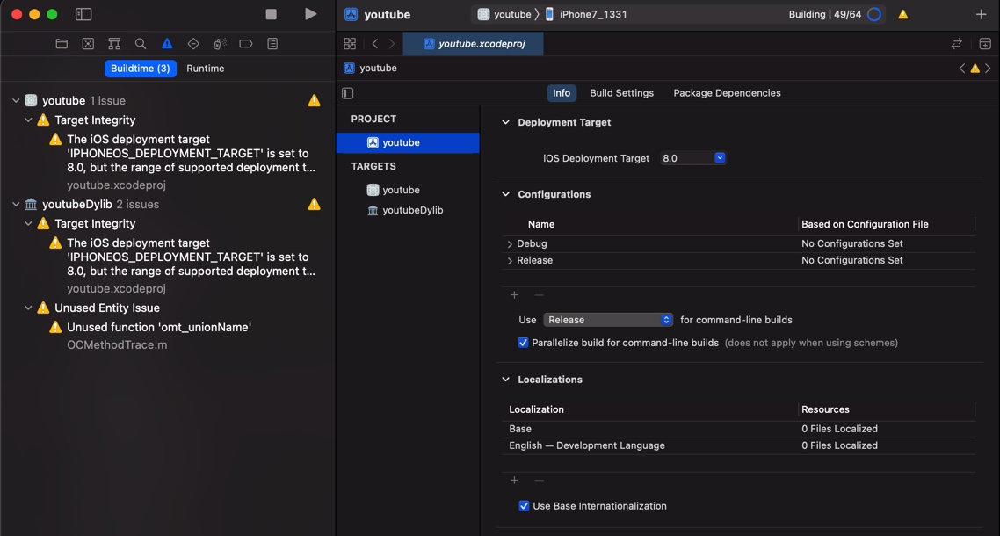
- Installing
- Running
- 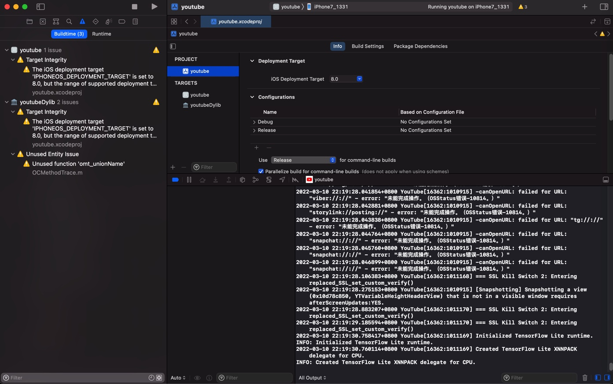
然后可以在iPhone真机上调试YouTube了：
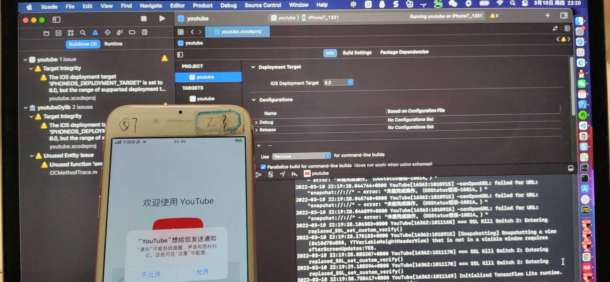